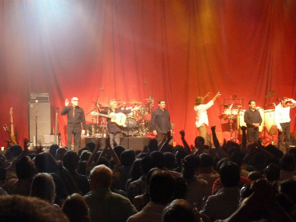
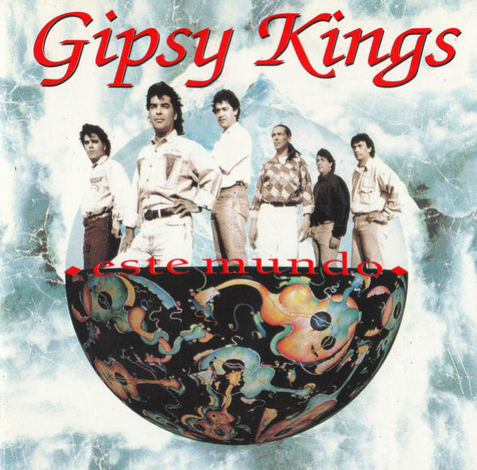
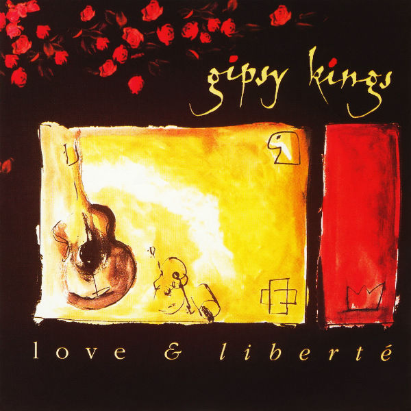
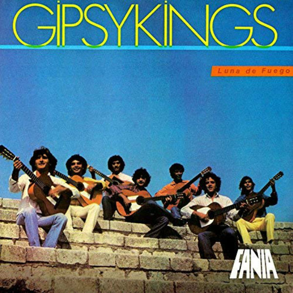
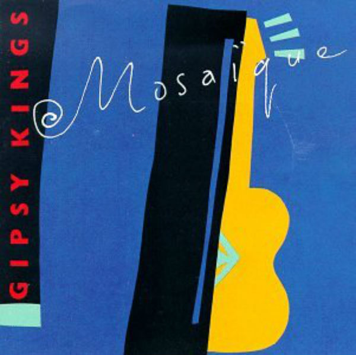

Gipsy Kings

Above: Gipsy Kings performing live in Chile in 2012. Photo by Carlos Varela on Flickr.com.
Gipsy Kings is a pop/flamenco/salsa group from the south of France, who perform their songs in Spanish. The fresh, soulful guitar strumming, energetic bongos and catchy melodies are perfect for asado with family and friends, relaxing in the home, or any easy listening scenario.
Click on the album covers below to listen to clips of four of Gipsy Kings' songs.
Album: Este Mundo

Click the play button to hear "Baila Me".
Album: Love & Liberte

Click the play button to hear "Djobi Djoba".
Album: Luna De Fuego

Click the play button to hear "Love & Liberte".
Album: Mosaique

Click the play button to hear "Volare".
This tribute to the music of Gipsy Kinds was created by Josephine Lopez. The page is an HTML-only scaffold for a project using JavaScript and jQuery.